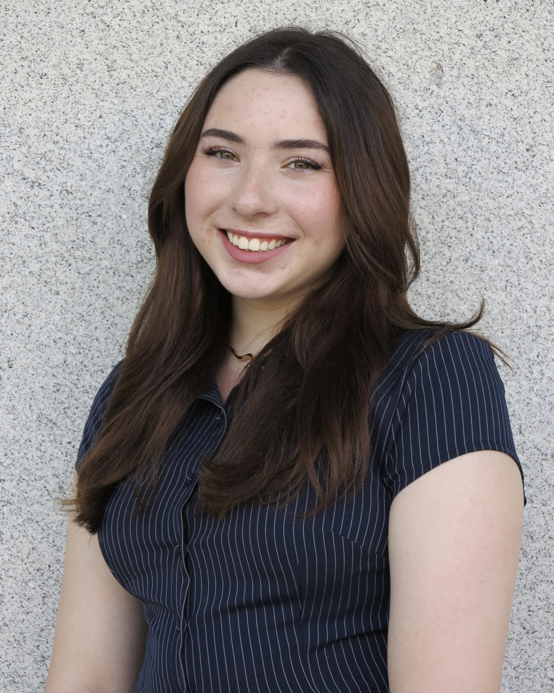

assets/img/profile/profile.jpgI'm studying Biomedical Engineering at Cornell University's Duffield College of Engineering. I'm most interested in medical devices, and I like working on both the electrical and mechanical sides of building them. I'm a member of the Integrative Design subteam with Engineering World Health, where I've contributed to circuit design and testing for a magnetic energy harvesting pendulum used in a low-cost, sustainable hearing aid developed with Solar Ear. My internship experience includes V&V engineering on handheld ultrasound devices at Clarius Mobile Health in Vancouver and research at Olea Medical in France, where I worked alongside PhD scientists on MRI and ultrasound technology.